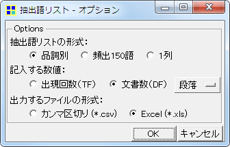
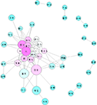
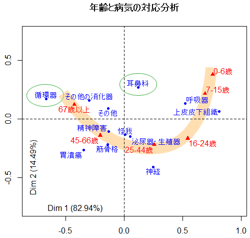
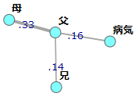
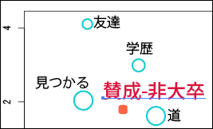

KH Coderについて質問をしたいときには
KH Coderのインストール方法やエラーについて
抽出語について
入力データとその準備について
外部変数について
分析結果について
WordMinerとKH Coderとの連携・併用について
カスタマイズや自動化について
その他
どうしてもうまくいかなかったり、疑問が解決しない場合には、
[JavaScriptを有効にすると掲示板へのリンクが表示されます]
にてご相談下さい。申し訳ありませんが、KH Coderの操作方法等に関するメールでのご質問は原則として受け付けておりません。
マニュアルをすべてお読みいただく必要はありませんが、マニュアル内の関連する箇所を読むだけで、質問をしなくても問題が解決する例が多く見られます。マニュアルはKH Coderのメニューから「ヘルプ」「マニュアル」とたどることで閲覧できます。紙の本の方が良い場合は、KH Coderの本 をどうぞ。
ご質問いただく際には、必ず以下の情報を添えるようにしてください。
お使いのKH Coderのバージョン。KH Coderのメニューから「ヘルプ」「KH Coderについて」とたどると確認できます。
お使いのPCがWindowsかMacか、そしてWindowsやmacOSのバージョン。
どんな操作をすればエラーが出るのか。回答者が同じ操作を行なえるよう具体的に。
チュートリアル の漱石「こころ」データで試してみると、エラーなしに分析／処理を行えるのかどうか。エラーが出ている場合は、省略や意訳をしていない一字一句そのままのエラーメッセージ、またはエラー画面のスクリーンショット 。コンソール画面のスクリーンショットも大いに役立つ場合があります。コンソール画面とは、通常は最小化されている、黒の背景に白い文字の画面のことです。
掲示板のような公開の場ではなく、個別のご相談をご希望でしたら、（株）SCREEN AS様ご提供のコンサルティング をご利用いただけます。
KH Coderのインストール方法やエラーについて
Windowsをお使いで、KH Coderが正常に起動しない場合には、以下の手順をお試し下さい。
デスクトップに新しいフォルダを作成し、フォルダ名を「KH Coder」とします。
そのフォルダに、ダウンロードしたKH CoderのWindows版パッケージ（khcoder-2b17-f.exe等）をコピーします。 コピーしたファイルを実行（ダブルクリック）します。 開いた画面のUnzip to folder: の欄に「C:\khcoder」と入力されていますが、これを「.」（ピリオド一文字）に変更します。
「Unzip」をクリックします。
この手順によって、デスクトップの「KH Coder」というフォルダ内にすべてのファイルが解凍されます。解凍された「kh_coder」（「田」の字に似たアイコンです）をダブルクリックして、KH Coderが起動するかどうかを確認してみてください。
かならずしもデスクトップでなくとも、「ダウンロード」「ドキュメント」といったフォルダをお使いいただいても大丈夫なはずです。
※デフォルトでは「C:\khcoder」という場所にすべてのファイルが解凍されます。この「C:\khcoder」ではうまく動かない場合には、上記のように「デスクトップ」をお試しいただくと良いでしょう。もしまだ試していない場合、先に「C:\khcoder」をお試しいただいた方がよいでしょう。
なおKH Coderを解凍・インストールしたフォルダ名に半角カナや特定の全角文字（だめ文字 ）が含まれていると、KH Coderが起動しませんのでご注意ください。
これらの点をチェックしてもKH Coderが起動しない場合には、KH Coderを解凍したフォルダにある「dep」というフォルダを開き、その中にある「R」というフォルダを削除してみてください。これで起動するようならば、統計計算とグラフィックスのための環境「R」 を利用しているコマンドは動かなくなりますが、それ以外のKH Coderの機能はお使いいただけます。
Mac OS XでKH Coderを利用するには2つの方法があります。1つはソースコードから起動する方法で、費用はかかりませんが、非常に煩雑な設定が必要です。
もう1つは、有償サポートの一環として提供中の自動設定ソフトウェア を購入していただく方法です。この方法ならMacでも手軽にKH Coderを利用できます。
デフォルトの「C:\khcoder」にKH Coderを解凍して使用してください。データも「C:\khcoder」に置いていただくと安全です。
Parallelsで、MacとWindowsでデスクトップを共有する設定にしていると、デスクトップのパス（コンピュータ内での住所みたいなもの）が特別な設定になります。このためKH Coderをデスクトップに置くと動作に支障がでることがわかりました。デスクトップだけでなく、ドキュメント・フォルダも同様と考えられます。
最近のBoot CampにWindowsをインストールした場合、HDD（SSD）のセクターサイズが標準の512とは異なるサイズになるらしく、それが原因でMySQLが起動しないという情報 がありました。MySQLが起動しないと、KH Coderで新規プロジェクトを作成する際に「List DBs」エラーが発生します。
対策としては、deps\mysql\khc.iniというファイルを「メモ帳」のようなテキストエディタで開き、[mysqld]という行の下に以下の記述を加えて上書き保存します。
innodb-flush-method = normal
次にdeps\mysql\dataフォルダを開き、ib_logfile0、ib_logfile1、ibdataという3つのファイルを削除します。これで正常に動作するようです。
KH Coder（Windows版パッケージ）の起動時や、プロジェクトの新規作成時、あるいはプロジェクトを開く際に、以下のような警告画面が表示される場合があります。
■大まかな指針
このような場合、基本的には「ブロックを解除する」を選択するようにして下さい。
KH Coderはデータの整理・検索・集計を行うために、既製のデータベース・ソフト「MySQL」を利用しています。そしてKH Coderが、MySQLに命令を出したり、MySQLから検索結果を受け取る際には、ネットワーク・プロトコル（TCP/IP）を利用しています。そのため、こういった警告が出る場合があります。※MySQLとの通信にネットワーク・プロトコルを利用しているだけですので、必ずしもPCがネットワークやインターネットに接続されている必要はありません。インターネットに接続していない状態でもKH Coderをご利用いただけます。
もっとも、Windowsファイアーウォールに関しては、「ブロックする」を選択した場合も、KH Coderの動作に特に問題はないようです。Windowsファイアーウォールによる「ブロック」は、やや手ぬるいためかと思います。手ぬるいというと語弊がありますが、おそらく、自分のPC上で動いているプログラム間の通信については、ブロックしないということのようです。
しかし、McAfeeのファイアーウォールやNortonの「Internet Security」「Personal Firewall」のような製品となると、話が変わってきます。これらの製品による「ブロック」は、Windowsファイアーウォールよりも徹底しているようで、KH Coderの動作に支障が出てしまいます。
以上のようなことから、基本的には「ブロックしない」や「通信を許可」を選択するという方針の方が、問題が起こりにくいかと思います。
■不安な場合
「とはいえ、KH CoderやMySQLに自由にネットワークを使わせるのは心配だ・不安だ」という場合は、以下のように設定することで、安心してお使いいただけるのではないかと思います。
まずKH Coder（kh_coder.exe）については、(1)KH Coderから自分のPCへの接続だけを許可し、(2)それ以外の通信を全て遮断します。下図は「Norton Internet Security 2004」でこのような設定を行った画面です。
なお「127.0.0.1」というのは、自分のPCを表す特別なIPアドレスです。127.0.0.1への接続だけを許可して、その他の接続・通信を遮断する設定を行えば良いわけです。具体的な設定方法については、お使いのファイアーウォール・ソフトのヘルプやマニュアルをご参照下さい。
次に、MySQL（mysqld-nt.exe）については、(1)自分のPCからMySQLへの接続を許可し、(2)それ以外の通信を全て遮断します。「Norton Internet Security 2004」の場合は、下図のようになります。
以上のように、自分のPC（127.0.0.1）との通信だけを許可し、外部との通信を遮断するという設定ならば、ご安心いただけるのではないかと思います。もちろん、このような設定ならば、KH Coderは支障なく動作するはずです。
※1 Windowsファイアーウォールでは、このような細かな設定は行えないようです。※2 KH CoderやMySQLはDNSへアクセスしようとしますが、このような設定を行うと、DNSへのアクセスが遮断されます。遮断されてもとくに問題は起こらないようですが、万一、「MySQLデータベースの処理に失敗しました」というエラーが表示され、プロジェクトの新規作成すらできなくなったというような場合には、DNSへのアクセスも許可してみてください。
ご自身で茶筌をインストール・設定された場合には以下の2点をご確認下さい。
まずChasen(茶筌)ですが、Chasenそのものを起動することは可能でしょうか。kh_coder.exeと同じ場所に解凍されているWinCha.batを実行し、開いた画面で形態素解析（品詞分解もどき）が可能かどうかご確認下さい。 次に、KH Coderの「プロジェクト」-> 「設定」部分でchasen.exeのパスは入力されていますでしょうか？「C:\khcoder\dep\chasen\chasen.exe」のように入力されている場合が多いと思いますが、最後の部分が「WinCha.exe」ではなく、「chasen.exe」となっていることを確認してください。
それ以外の場合、または以上２点が大丈夫なのにうまくいかない場合は、下の手順を試してみてください。
[1]KH Coderを「c:\khcoder\」フォルダにインストールし直し、
次に分析対象ファイルの名前ですが、記号や全角文字を使わずに、半角アルファベットのみのファイル名にして試してみてください。
その他の注意点として、分析対象ファイルの文字コードが「Shift-JIS」「EUC」「JIS」のいずれかになっていることを確認してください。Unicode / UTF8には現在の所対応していません。また分析対象ファイルに文字化けが含まれている場合は、「前処理」を行う前にその部分を取り除くと良いでしょう。「分析対象ファイルのチェック」コマンドを使うと、自動的に文字化けしている部分を除去できます。
Excelをはじめとする他のソフトが起動している場合は、それを終了してから同じ処理をKH Coderで行ってみてください。Excelのようなソフトは、開いているファイルを他のソフトから「保護」するため、同じファイルをKH Coderが処理しようとすると失敗します。
またDropboxでKH Coder関連のデータを同期している場合も、同じことが起こります。Dropboxはデータの同期時中に、ファイルの内容が変更されないよう「保護」するため、同じファイルをKH Coderが処理しようとするとエラーになります。KH Coderを動かす際には、Dropboxの同期を一時停止するか、Dropboxを使わずにプロジェクトの「エクスポート」「インポート」機能でデータを他のPCに移すのが良いでしょう。
これらの点を確認しても同じエラー・メッセージが出てしまう場合は、上記[1]～[4]の手順 をおためし下さい。
エラー表示画面の最下部、「エラー出力：」の欄に「The table 'rowdata' is full」とある場合には、以下の手順でKH Coderの設定を変更してください。
メニューから「プロジェクト」→「設定」をクリックして、開いた画面で「前処理効率化のためにデータをRAMに読み出す」のチェックを外して、「OK」をクリックします。
↑ FAQ Index ↑
抽出語について
時として、抽出語が何回データ中に出現していたかという「出現回数（TF）」ではなく、いくつの文書中に出現していたかという文書数（DF）／出現件数を集計したいこともあるでしょう。こうした集計を行えば、例えば自由記述データの場合、何人の回答者がその語に言及していたのかを調べることができます。

メニューから「ツール」「抽出語」「抽出語リスト」をクリックして、上図のオプション画面で「文書数（DF）」を選択すれば、こうした集計を行えます。
※以前は以下のようなSQL文を実行する必要がありましたが、現在では上のようなマウス操作でOKです。
KH Coderのメニューから「ツール」「SQL文の実行」をクリックして、以下のSQLを実行すると、文書数／出現件数の多いものから順に150語をリストアップすることができます。結果として表示されるDFの列が文書数／出現件数を表し、TFが出現回数を表しています。またこのSQL文では、「抽出語リスト（品詞別・出現回数順）」をもとに作成する「頻出150語の表」の場合と同じ品詞を選択し、リストアップを行います。
SELECT
genkei.name as W,
khhinshi.name as H,
f as DF,
genkei.num as TF
FROM khhinshi, genkei
LEFT JOIN df_dan ON genkei_id = genkei.id
WHERE
genkei.khhinshi_id = khhinshi.id
and khhinshi.name != "否定助動詞"
and khhinshi.name != "未知語"
and khhinshi.name != "否定"
and khhinshi.name != "名詞B"
and khhinshi.name != "形容詞B"
and khhinshi.name != "動詞B"
and khhinshi.name != "副詞B"
and khhinshi.name != "感動詞"
and khhinshi.name != "その他"
ORDER BY DF DESC
LIMIT 150
なお上のSQLでは、それぞれの段落を「文書」と見なしています。すなわち、それぞれの文書ないしは回答が、改行で区切られているデータを想定しいます。これを段落ではなく文に変更するには、上のSLQで「 df_dan 」となっているところを、「df_bun」に変更して下さい。また、H1見出しで括った部分を1つの「文書」と見なしたい場合は「df_h1」のようにします。
次に、「語A、語B、語Cの文書数／出現件数を知りたい」というような場合には、以下のようなコーディングルールをお使いいただけます。
＊コードA
語A
＊コードB
語B
＊コードC
語C
「コーディング」→「単純集計」画面で「頻度」と表示される数値が、文書数／出現件数にあたります。
デフォルトの品詞設定では、KH Coderは助詞や助動詞などの機能語には「その他」という品詞名を与えます。そして、「その他」という品詞名を与えられた語は基本的に無視され、「抽出語リスト」にも載りませんし、検索や集計の対象にもなりません。
こうしたKH Coderの品詞設定を変更するには、「kh_coder.exe」と同じ場所の「config」フォルダを開き、その中にある「hinshi_chasen」というファイルをテキストエディタで開きます。Windowsのメモ帳ではなく、サクラエディタ （フリー）や秀丸エディタ （シェア）のような、文字コードがEUCのファイルを扱えるテキストエディタをお使い下さい。
例えば、助詞と助動詞を分析対象としたい場合は、以下の2行をこのファイルの末尾に加えます。
30 ,助詞 ,助詞 31 ,助動詞 ,助動詞
以上の操作によってKH Coderの品詞設定が変更されるので、助詞や助動詞に「その他」ではなく「助詞」「助動詞」といった品詞名が与えられるとともに、検索・集計の対象となります。※ただし、既存のプロジェクトについては、前処理を再度実行するまでは変更が反映されません 。以上の操作に加えて、前処理を再度実行して下さい。
次に、より詳細な品詞設定の例を考えてみましょう。茶筌は助詞を「助詞-格助詞」「助詞-係助詞」などに分類していますが、もしこのうち「助詞-格助詞」だけを取り出したいという場合は、以下の1行を「hinshi_chasen」ファイルに追加します。
30 ,格助詞 ,助詞-格助詞
さらに、茶筌は格助詞についても「助詞-格助詞-一般」「助詞-格助詞-連語」などの区別を行っています。このうち「助詞-格助詞-一般」だけを取り出して、「格助詞」としてKH Coder上で扱うには、以下の1行を「hinshi_chasen」ファイルに追加します。
30 ,格助詞 ,助詞-格助詞-一般
これらの記述の紫色 の部分は、KH Coder上での品詞名を表します。ここには自由な品詞名を指定することが出来ます。赤色 の部分はKH Coder上での品詞番号です。他の品詞の番号と重複しないように注意して下さい。そして緑色 の部分が、茶筌の出力する品詞名です。こうした記述によって、「茶筌の出力した品詞名がA であれば、KH Coder上ではB という品詞名を与える」という指定を行えます。なお緑色 の部分については前方一致で処理が行われているので、「助詞」とだけ指定すると、「助詞-格助詞」など、「助詞」で始まるものがすべてヒットします。
なお、KH Coderの品詞体系の詳細についてはマニュアルの2.2節を、茶筌の出力する品詞名については茶筌のマニュアルの末尾をご覧下さい。茶筌のマニュアルは、「kh_coder.exe」がある場所から見て、「dep\chasen\doc\manual-j.pdf」に同梱されています（Windows版パッケージの場合のみ）。
上図はこうした設定を行って、漱石「こころ」から、格助詞「に」の直後に動詞があるケースを検索した結果です。ヒット数から、こうしたケースは1,133件あったことが分かります。
準備に少し手間がかかりますが、可能です。掲示板のこちらのやりとり をご覧下さい。ダウンロードするファイル名については、適宜、最新版のファイル名に読み替えながらご覧下さい。
↑ FAQ Index ↑
■「旅館」と「ホテル」と「宿泊先」は同じものとして扱いたいのですが？【コーディング】
こうした操作のことをKH Coderではコーディング と呼んでいます。コーディングルールを作成することで、分析者が取り出したいと思う様々なコンセプトを自由にデータ中から取り出して、カウントしたり、データ中の偏りを見ることができます。
リンク先の例では「or」しか使っていませんが、and・or・not・()はもちろん、様々な条件指定が可能です。詳しくはマニュアルをご覧下さい。
なお原則として、自動的に取り出した「語」と、分析者の観点にもとづいて取り出した「コード」を混ぜて分析することはできません。この点について詳しくはこちらの議論をご覧ください。http://koichi.nihon.to/cgi-bin/bbs_khn/khcf.cgi?no=2019&mode=allread http://koichi.nihon.to/cgi-bin/bbs_khn/khcf.cgi?no=1979&mode=allread
■「人間関係」という言葉が「人間」と「関係」に分かれてしまうのですが？【強制抽出】
こうした場合は、KH Coderのメニューから「前処理」「語の取捨選択」と進んで、「強制抽出する語」の欄に「人間関係」を追加してください。こうした手当てをしない場合、KH Coder（茶筌／MeCab）は一番小さい単位まで語を分割する傾向があります。
■複合語（専門用語）を自動的に見つけ出せないの？【複合語検出】
「人間関係」のように、手当てをしないと分割されてしまうような語を「複合語」と呼びます。KH Coderのメニューから「前処理」「複合語の検出」「TermExtractを利用」を選択すると、データ中の複合語を洗い出すことができます。出てきたリストの中から、必要なものを上記の「強制抽出」欄に追加しましょう。
ただし、複合語が分割されても、共起ネットワーク上で「人間」と「関係」がつながっていれば、「あぁ、人間関係ね」と解釈することは十分可能です。あまりこの部分に神経質になる必要はないかもしれません。
■茶筌・MeCabの辞書を編集するという方法も
KH Coderは日本語データ中から語を取り出すために、茶筌またはMeCabを用いています。よって、これらの辞書を編集することで複合語や専門用語に対応することも可能でしょう。
入力データとその準備について
「メモ帳」「サクラエディタ」「秀丸」のようなテキストエディタにデータを入力するか、あるいは「Excel」や「Calc」のような表計算ソフトにデータを入力します。どんな分析をしたいかによって、適したデータ準備の形式は変わりますので、以下、場合別にご紹介します。
■全体に多く出現する言葉やテーマを知りたい場合【テキストファイル作成】
テキストエディタに、文章を入力するだけでOKです。「抽出語リスト 」「共起ネットワーク 」などのコマンドをご利用ください。
「共起ネットワーク」のかわりに、「多次元尺度構成法（MDS）」「クラスター分析」「自己組織化マップ」を使ってもよいでしょう。
■2つ～3つ程度の文書をお互いに比べてみたい場合【別個のテキストファイル】
2つ～3つのテキストファイルにそれぞれの文書を入力して保存するのが簡単でしょう。それぞれを別々のプロジェクトとしてKH Coderに登録し、別々の抽出語リスト・共起ネットワークを作成します。そして、頻出150語の表を2～3並べて比べてみたり、同様に共起ネットワークを並べて見比べるとよいでしょう。
なお、1枚の図表に情報を要約したり、統計的な比較を行ないたい場合には、1つ下に記載の見出しで区切る方法が有効です。
■3～10以上の文書の特徴を見たい場合【テキストファイルを見出しで区切る】
たとえば「<H1>○○○</H1>」というような行を、H1タグをつけた見出しと言います。このような見出し行を入れることで、1つのテキストファイルをいくつかの部分に区切ることができます。なお、別々のファイルに保存した文書を、見出しで括った1つのテキストファイルに自動的にまとめる こともできます。
<H1>文書1の見出し</H1>
こうしたファイルを作成すれば、対応分析 や見出しを使った共起ネットワーク 、特徴語一覧 によって、それぞれの文書を比較することができます。
コーディングルールを作成すれば、それぞれの文書に多く出現するコンセプトをヒートマップやバブルプロット で調べることもできます。
■いろいろな要因による文書の変化を見たい場合【CSV・Excelファイルの作成】
アンケートの自由記述を分析するときには、性別・年代・学歴などなど、いろいろな変数によるテキストの変化を見たいでしょう。こうした場合は、表計算ファイルにデータを入力 する方法が良いでしょう。
使う変数を選ぶだけで、性別ごと、年代ごと、学歴ごとの特徴を調べることができます。方法としては、1つ上の項目に出てきた方法（対応分析や見出しを使った共起ネットワークなど）すべてを利用できます。
※この項目は数年以上前に作成した項目です。現在では、<H1>から<H5>までタグを使うよりも、Excelファイルを作成する方が分かりやすく、手間もかからないかもしれません。
KH Coderは<H1>から<H5>までのタグを使ったHTMLファイルに対応しています。これらのタグをデータ中に打ち込むことで、単に「文」や「段落」ごとの分析だけではなく、より複雑なことが行えます。
例えば、インタビューやChatなどの会話記録をデータとして扱う場合を考えてみましょう。さらに、次のような形のデータをKH Coderに投入したとしましょう。
<h1>インタビュー１</h1><h1>インタビュー2</h1>
（実際のデータにインデントは不要です）
こういったデータを用いれば、それぞれの発言が「H2」としてKH Coderに認識されます。よって検索単位として「H2」を指定すれば、特定の単語を含む発言を検索したり、コーディングしたりすることがきるようになります。それだけでなく、「特定の発言者の言葉の中に単語Aが出現していれば」といった条件付けによる検索やコーディングを行うこともできます。また、特定の発言者が好んで使っている語（その発言者の言葉の中に高い確率で出現している語）のリストといったものをKH Coderに表示させることができます。
同様に「H1」を指定してやれば、それぞれのインタビューごとの特徴を調べることもできるでしょう。
こういったタグ付けは、新聞記事をはじめ様々なデータの分析に応用することができるでしょう。
あります。ただし、元のデータが何らかの決まった形になっていることが条件です。
例えば次のように、発言者名と発言内容が全角セミコロン「：」で区切られているデータがあったとしましょう。
発言者A：発言内容・・・________
まず、秀丸 のような「正規表現」を使った検索・置換が可能なテキストエディタを用意します。以下、秀丸を使うものとして説明を続けます。^(.+)： 」、置換部分には「<h2>\1</h2>\n 」と入力して「全置換」ボタンをクリックします。
これでデータ全体のタグ付けが完了します。ちなみに入力した文字列（正規表現）の意味は次の通りです。
□検索部分
□置換部分
この正規表現というものを応用して、ご自分のデータ形状にあった検索・置換を行えば、一瞬にしてデータ全体のタグ付けを実行することができます。KH Coder掲示板 でご質問いただければ、わかる範囲でですが、お答えします。
なお、こういった操作を行う際は必ずデータのバックアップを取るようにして下さい。「変換に失敗して、おまけに、間違えて上書き保存をしてしまった」といった場合に備えて・・・。（試行錯誤をしている時で、おまけに疲れてきた時などには、あながち、あり得ないことではありません）
1つのプロジェクトにつき、分析対象ファイルを1つしか登録できないようですが、KH Coderは複数の文書を扱えないのですか？
いえいえ、複数の文書を扱うことができます。ただし、すべての文書を1つのファイルにまとめて入力し、そのファイルをKH Coderに登録していただく必要があります。
例えば3つの文書を比較して、それぞれの文書の特徴を知りたいといった場合には、漱石「こころ」のチュートリアルで「上」「中」「下」の特徴を調べたのとまったく同じ手順で、分析を行っていただけます。すなわち、「<h1>ここから文書1<h2>」といった見出しを3つ入力することで、1つのファイル内で、文書を3つに区切って分析することができます。
このような見出しを加えつつ、複数のファイルの内容を1つのファイルに結合する処理を、KH Coderのプラグインによって自動的に行うことができます。具体的な手順についてはこちらのページ の「始める前の準備」と「第5章の練習問題」をご覧ください。
分析対象ファイルのサイズについては、200MB程度までは実際に試した ことがありますし、理論上は特に制限はありません。 強いて書くならば、設計上、データサイズの上限はMySQLの性能に依存します。しかし、これまでに見聞きした範囲では、MySQLの上限に行き当たるよりも先に、ディスクスペースが埋まってしまう場合の方が多いようです。
ただし、こうした大きなファイルを分析する際には、処理に非常に長い時間がかかる ことと、分析対象ファイルの100倍程度の空き容量がHDDに必要なことにご注意下さい。さらに前処理を実行する前に、メニューから「プロジェクト」「設定」をクリックし、「前処理効率化のためにデータをRAMに読み出す」のチェックを外しておくと安全です。
また、Rは大規模データに必ずしも対応していない面があるため、大規模データを扱う場合はRを使った多変量解析 が上手く行かない場合があります。具体的には、エラーが出て結果が表示されない場合や、実行に何時間もかかる場合があります。
データサイズが大きすぎるためにRを用いた多変量解析 が上手く行かない場合には、以下のような方策が考えられます。
データサイズを縮小したくない場合には、Rではなく、大規模データに対応した統計ソフトをご利用いただくとと良いでしょう。「文書ｘ抽出語」表の出力コマンドを使ってKH Coderからデータを取り出し、大規模データを扱える統計ソフトで解析していただく形になります。 KH CoderのRを用いた多変量解析 機能を利用されたい場合には、ランダム・サンプリングを行うことでデータサイズを縮小されるのが一手でしょう。日本人は1億2千万人以上いますが、きちんとランダム・サンプリングを行いますと、2500人も集めれば±2%程度の誤差で日本人の様子を調べることができます。KH CoderからRに分析用データとして送られるのは「文書ｘ抽出語」表ですが、ここでの文書数を10,000以下、抽出語数を100以下に抑えれば比較的短時間で解析結果を得られるでしょう。なお、文書数を減らすためには、分析対象ファイルを加工して内容を削る（サンプリングする）しかありません。ですが抽出語数については、分析のオプション画面で使用する語を減らすことができます。
上記2つの中間的な方法として、Rに送る「文書ｘ抽出語」表のサイズが小さくなるように工夫することが考えられます。目安は上に挙げたとおり、文書数10,000以下、抽出語数100以下です。
抽出語数については、品詞や出現数などを使って100以下におさえると良いでしょう。
文書数については、文単位ではなく、段落単位／文章単位での分析を考えると良いでしょう。「同じ段落／文章に登場する語は？」といった文脈情報を解析に利用できる上に、文の数よりも段落／文章の数の方が圧倒的に少ないので、「文書ｘ抽出語」表のサイズも小さくなります。
抽出語の共起ネットワーク作成やクラスター分析・多次元尺度法などを行う場合には、さらに別の方策もあります。「抽出語ｘ文脈ベクトル」表の出力コマンドを使ってデータを取り出せば、文書数が何十万あっても、任意のサイズの行列にデータを圧縮することができます。行数は分析に使う単語数と等しくなりますが、列数は任意に設定できるので、5,000～10,000程度にすれば良いでしょう。
※文書数10,000・抽出語数100を一応の目安として示していますが、このうち抽出語数100については、画面上にプロットすることを考慮した値です。すなわち、100を超える数の語をプロットしても、確認が難しいだろうという判断です。プロットを行わないような場合には、もう少し増やしても良いでしょう。例えば文書のクラスター分析では、 文書数5,000・抽出語数3,000程度で分析を行うことも考えられます。
上記2と3を組み合わせることで「文書ｘ抽出語」表のサイズを抑えるか、あるいは4の方法をとるかというのが個人的にはお勧めでしょうか。なお、ここでサイズを抑える必要があるのは、あくまで「文書ｘ抽出語」表のようなRに送るデータ行列のサイズであり、分析対象ファイルの容量（MB）はさほど問題になりません。
↑ FAQ Index ↑
199MBの新聞記事データ（約110,000件）と、ランダムサンプリングによって15MB（約8,000件）まで縮小したデータの処理を行ってみました。処理に要した時間を下表にまとめています。参考までに、文書数は同等に多いものの、容量（MB）が小さいデータの処理時間も示しています。
データ種別
文書数
容量
前処理
共起ネットワーク
新聞記事（大）
110,000
199MB
06:24:16
00:15:46
新聞記事（小）
8000
15MB
00:07:04
00:01:03
論文タイトル
106,000
5MB
00:02:41
00:01:38
計測PC： Core2Quad Q9650@4Ghz、4GB RAM、SSD（Intel X-25M）
所要時間の表示は「時間:分:秒」です。サンプリングによって縮小したファイルと、もとの大きなファイルでは処理時間に大きな違いがあります。データ分析の際には、様々な分析を行って結果を比較したいことがよくありますから、この処理時間の差は非常に大きいと言えるでしょう。

全データ（199MB）
サンプリング後（15MB）
ここで、もとの199Mのデータと、ランダム・サンプリングによって15Mまで減らしたデータとを比べると、分析結果である共起ネットワークが非常に似通っていることがわかります。配置こそ変化していますが、語と語とのつながりはおおむね同じです。例えば「日本」「東京」「学生」「大学」のあたりを比べてみてください。
1つ上の項目でも書きましたが、日本人は1億2千万人以上います。ですが、きちんとランダム・サンプリングを行いますと、2500人も集めれば±2%程度の誤差で日本人の様子を調べることができます。いかに大規模データが手元にあるとしても、サンプリングを活用されることがお勧めです。サンプリングによって縮小したデータでまずは分析を行い、もしも「このトピックに関するデータがもっと欲しい」ということになれば、元データからの検索・サンプリングをやり直すとよいでしょう。KH Coderを使用する限り、100MB単位までならなんとかなりますが、ときおり噂を聞くような100GB単位の巨大コーパスについては、そのまま分析するのは現実的ではありません。
Ver. 3からは中国語・韓国語・ロシア語・カタロニア語データの分析にも対応しました。中国語の分析にはStanford POS Tagger を、韓国語の分析にはHandic を、ロシア語・カタロニア語の分析にはFree Ling を使用しています。
またVer. 3では、フランス語・イタリア語・ポルトガル語・スペイン語データから、より正確に語の基本形を取り出せるようになりました。Ver. 2では単純な規則で語尾を切り落とすStemmingのみの対応でしたが、辞書にもとづくlemmatizationが可能になりました。lemmatizationにはFree Ling を使用しています。
MeCab および中古和文Unidic ・近代文語Unidic を使用することで、分析が可能です。下図は源氏物語の夕顔（中古和文）の共起ネットワークです。※出現数の多い一般的な語を省くために、最小出現数を8、最大出現数を40とし、副詞のチェックを外す設定を行いました。
こうした分析のためには、MeCabや辞書の設定を行い、さらにKH Coderの品詞設定などを変更する必要があります。以下にWindows上での設定例を示します。
MeCab 0.996をインストール ※インストール先は変更せずにそのまま
中古和文UniDic ver.1.3 Windows パッケージをインストール ※インストール先は変更せずにそのまま
mecabrcを編集して、中古和文UnidicをMeCabの標準（デフォルト）辞書とする
「C:\Program Files\MeCab\etc\mecabrc」を秀丸・サクラエディタなどのテキストエディタで開く
「dicdir = $(rcpath)\..\dic\ipadic」という箇所を、「dicdir = $(rcpath)\..\..\UniDic-EMJ\dic\unidic-mecab」へと変更
上書き保存
※「$(rcpath)\..\..\」と書かずに、「C:\Program Files\」のようにフルパスを指定しないと上手くいかないケースがあるとのご報告をいただいております（Windows 8.1）。
中古和文Unidicに、ChaSenと同じ形式で出力する設定を追加する
「C:\Program Files\UniDic-EMJ\dic\unidic-mecab\dicrc」を秀丸・サクラエディタなどのテキストエディタで開く
末尾に以下の3行を追加： 上書き保存
KH CoderがMeCabを使用するように設定する
KH Coderを起動する
メニューから「プロジェクト」「設定」
開いた設定画面で「MeCab（日本語）」を選択する
「mecab.exeのパス」の右の「参照」ボタンをクリックし、「C:\Program Files\MeCab\bin\mecab.exe」を開く
「Unicode辞書」にチェックを入れる
「OK」をクリック
KH Coderをいったん終了
KH Coderの品詞設定を中古和文Unidicにあわせて変更する
「C:\khcoder\config\hinshi_mecab」を秀丸・サクラエディタなどのテキストエディタで開く
内容（全体）を以下のようなものに変更して上書き保存
hinshi_id,kh_hinshi,condition1,condition2
以上で設定は完了です。なお最後の品詞設定は、辞書（この場合は中古和文Unidic）の品詞体系と分析の目的に応じて適宜調節します。
分析対象ファイルとしてテキストファイル（*.txt）を指定した場合は、再度プロジェクトを作成する必要はありません。前処理を再度行うことで、変更内容がKH Coderに取り込まれます。再度前処理を行うには、KH Coderのメニューから「前処理」「実行」を順にクリックして下さい。
ただし、外部変数を読み込んでいて、なおかつケース数が変わるという場合には、この方法は使えません。例えば、もともと新聞記事が500件あって、外部変数として掲載面・日付などを読み込んでいる状態を考えます。ここに記事を何件か付け足したいというような場合は、新たなプロジェクトとして登録しなければなりません。再度前処理を行っただけでは、外部変数（掲載面・日付）と記事の対応がとれなくなってしまうためです。
また、分析対象ファイルとしてExcelファイルやCSVファイルを指定した場合も、再度プロジェクトを作成する必要があります。ExcelファイルやCSVファイルからテキストファイルを作成し、それをKH Coderに登録するという処理は、プロジェクト作成時にしか行なわれません。そのため、Excel・CSVファイルに手を加えた場合は、再度プロジェクトを作成しなくてはいけません。
外部変数について
KH Coderでは、テキスト型データに含まれていない情報を「外部変数」として読み込み、検索やコーディングのための条件として利用することができます。
例えば新聞記事を分析する場合であれば、新聞記事が掲載された日付や、掲載された面などを、外部変数として読み込むことが考えられます。また、アンケート調査の自由回答項目を分析する場合は、性別・年齢・職業・学歴など（の通常の質問項目）を外部変数として読み込むと良いでしょう。
いったん外部変数を読み込めば、例えば、男性の回答中に特に多くあらわれる言葉のリストを表示したり、「男性の回答中に単語Aが出現していれば」といった条件での検索・コーディングを行うことができます。また、コーディング（数え上げ）の結果を、男女別に集計することもできます。
※現在では、下記のように「テキスト」と「外部変数」で別個のファイルを作成するよりも、両方を1つのExcelファイル内に入力することをお勧めしています 。
テキストファイル（分析対象ファイル）と対応する外部変数ファイルを準備する必要があります。ここで「対応する」というのは、ケース数やケースの順番が同じということです。例えば、アンケート調査の自由回答項目を分析する時に外部変数を用いたい場合、次のような外部変数ファイルを準備する必要があります。なお、外部変数ファイルは、CSV形式かタブ区切り形式で保存する必要があります。
テキストファイル
外部変数ファイル
回答者Aの回答・・・・_________
ID
性別
年齢
回答者A
男性
23
回答者B
男性
47
回答者C
女性
35
回答者D
男性
52
回答者E
女性
19
回答者F
女性
31
この場合、テキストファイルではそれぞれの回答が改行で区切られているので、KH Coderは「段落」として各回答を認識しています。したがってこの場合、外部変数を読み込む際には、「読み込み単位」として「段落」を選択します。もしも回答者数が、テキストファイルと外部変数ファイルとで食い違っていると、エラーメッセージが表示されて読み込みが中断されます。
なお、100や200といった数の外部変数を読み込むと、操作に支障が出る場合があるかもしれません。内部処理には一切問題ないのですが、GUI（操作画面）の都合で、「コーディング」「外部変数とのクロス集計」コマンドの操作が厳しくなるかもしれません。現状では、10～20程度までがお勧めです。
「主な機能と分析手順 」のページで解説している「段階1」
次に分析の「段階2」
その他にも、コーディングルール中で「<>変数名-->値」のように記述することで、外部変数をコーディングに利用することもできます。また、「コンコーダンス」や「文書検索」で開く「文書表示」画面の下部に、読み込んだ外部変数の値が表示されます。よって、回答者ID（のようなもの）を外部変数として読み込んでおくと、確認が楽になる場合があるでしょう。
なお、「女性が1、男性が2」といった数字のコードが、外部変数ファイルに入力されている場合もあるかと思いますが、このままではコーディングルールやKH Coderの画面表示が少し分かりにくくなってしまいます。そんな場合には、「値ラベル」として「男性」「女性」のような文字列を入力することで、「<>性別-->男性」のように指定できるようになります。
※余談ですが、既にチュートリアル を一通りフォローされた方ならお気づきの通り、外部変数の利用法というのは、チュートリアルにあった「見出し」の利用法と非常に似通っています。実際、「見出し」というのは特殊な形の外部変数として、KH Coderの内部で扱われています。
マウスとキーボードを交互に使いながら、値ラベルを入力していく作業は、確かにいくぶん面倒です。同じ値ラベルを複数のプロジェクトに入力するような場合には、SQL文を利用すると多少は楽になるかもしれません。「ツール」「SQL文の実行」コマンドを使って、以下のようなSQL文を実行すると、複数の変数・値に一気にラベルを貼ることができます。（SPSSで言うところの「value labels」シンタックスのようなものです）
## 一時テーブルを作製（この部分は変更しない）
DROP TABLE IF EXISTS temp_labels, outvar_lab_new;
CREATE TABLE temp_labels(
var VARCHAR(255),
val VARCHAR(255),
label VARCHAR(255)
);
## 一時テーブルにラベルを入力（この部分の2行目以下を編集）
INSERT INTO temp_labels (var, val, label) VALUES
( ' 性別 ', ' 1 ', ' 女性 ' ),
( ' 性別 ', ' 2 ', ' 男性 ' ),
( ' 学歴 ', ' 1 ', ' 中学校 ' ),
( ' 学歴 ', ' 2 ', ' 高等学校 ' ),
( ' 学歴 ', ' 3 ', ' 大学 ' );
## ラベルデータをKH Coder向けに整形（ここから下も変更しない）
CREATE TABLE outvar_lab_new(
id INT PRIMARY KEY AUTO_INCREMENT,
var_id INT NOT NULL,
val VARCHAR(255),
lab VARCHAR(255)
);
INSERT INTO outvar_lab_new (var_id, val, lab)
SELECT outvar.id, temp_labels.val, temp_labels.label
FROM outvar, temp_labels
WHERE outvar.name = temp_labels.var;
INSERT INTO outvar_lab_new (var_id, val, lab)
SELECT outvar_lab.var_id, outvar_lab.val, outvar_lab.lab
FROM outvar_lab
LEFT JOIN outvar_lab_new ON
outvar_lab.var_id = outvar_lab_new.var_id
AND outvar_lab.val = outvar_lab_new.val
WHERE outvar_lab_new.lab is NULL;
DROP TABLE temp_labels;
DROP TABLE outvar_lab;
RENAME TABLE outvar_lab_new TO outvar_lab
「( ' 性別 ', ' 1 ', ' 女性 ' )
分析結果について
チュートリアル・スライドの21ページ目 をご覧ください。
原点（縦軸も0、横軸も0の位置）からの方向と距離に注目するのがポイントです。抽出語と変数（見出し）の位置が「近い」「遠い」といった解釈は、厳密に書くと誤りです。
対応分析のプロットにはいくつかの方式・流儀があります。ですが、どの方式であっても、原点からの方向と距離に注目する解釈の仕方であれば問題は生じにくいです。もう少し詳しい説明を、掲示板のこちらのスレッド で試みています。 さらに詳しくは『対応分析入門 ―原理から応用まで―』 やCorrespondence Analysis in Practice 2nd ed.
多くの抽出語や変数（見出し）が、放物線のような形に並ぶプロットは「馬蹄形」（Arch pattern or "horseshoe" pattern）と呼ばれることがあります。たとえば下図のような形です。
『対応分析入門 ―原理から応用まで―』 第3章掲載のデータを用いて作成）
こうした場合でも、基本的には（1つ上の項目 で述べた）通常の解釈が可能です。たとえば「循環器」は（1）原点から遠くに離れており、（2）原点から見て「67歳以上」の方向にあることから、「循環器の病気は67歳以上の人に特徴的である」ことが分かります。
ただし、こうした形のプロットを解釈するときには気をつける点もあります。1つは、「67歳以上」から「0-6歳」にかけての年齢による変化が、直線上ではなく、曲線（放物線）の上に描かれているということです。1つの軸（この場合は年齢）による影響がとても大きい時に、こうした「馬蹄形」があらわれがちです。
そしてもう1つ、こうした場合、「67歳以上から0-6歳にかけての変化」という軸に乗らない病気は、放物線上にも乗りません。上の図では「耳鼻科」が放物線から大きく外れています。耳鼻科は「67歳以上」にも「0-6歳」にも多いというめずらしい病気であったためです。
結論として、「馬蹄形」は必ずしも悪いものではありませんが、解釈する時に以上の2点に注意が必要と考えます。こうした点についてさらに詳しくは、『対応分析入門 ―原理から応用まで―』 のpp. 28-31や、Correspondence Analysis in Practice 2nd ed.
CSV形式で保存 できるようになりました。CSV形式で保存したファイルを、他のソフトでご利用ください。
自動的にグループ分け（サブグラフ検出）を行なった時、同じグループに含まれるノード（語）は実線で結んでいるのに対して、異なるグループに含まれるノードは破線で結んでいます。
それだけのことですので、深遠な意味があるわけではなく、単にグループ分けの結果を見やすくするための小さな工夫です。
共起ネットワークでは、特に設定を変更していなければJaccard係数というものを使って、共起の強さを測っています。この係数について詳しくは、『実例 クラスター分析』という書籍がお勧めです。
私も簡単な説明スライドを作っていますので、よろしかったらご覧ください。
KH Coder 3では「係数を表示 」というオプションを追加したので、こちらをお使いください。KH Coder 2の場合には以下のような手順が利用できます。
掲示板のこちらのスレッド をご参照ください。
上記スレッドに記載のRコマンドの代わりに、以下のコマンドを実行することで、共起ネットワーク上にJaccard係数を表示することもできます。ただし密集部分は読み取りにくいです。

Jaccard係数ではなく、共起した回数を表示したい場合には、次のような手順が必要になります。
保存した*.rファイルをテキストエディタで開き、「dist」を検索します。すると「d <- dist(d,method="binary")」 という行が見つかるので、この行の前に、「d2 <- d」という行を挿入して、上書き保存します。
上書き保存した*.rファイルを、Rのコンソールにドラッグ＆ドロップして実行します。するとKH Coderで作成したのと同じ共起ネットワークがR上に作成されます。
以下のコマンドを、Rのコンソールに貼り付けて実行します。
Jaccard係数ではなく共起した回数を表示し、なおかつ各抽出語の出現回数も表示するには、上の手順の1.を以下のように変更してください。
保存した*.rファイルをテキストエディタで開き、「dist」を検索します。すると「d <- dist(d,method="binary")」 という行が見つかるので、この行の前に、以下の2行を挿入して上書き保存します。
データ中には多く出現していても、他の語と強い共起関係がなかった語（他の語とよく一緒に使われているという関係が無かった語）は、ネットワークに出てきません。これを避けたい場合は、共起ネットワークではなく、多次元尺度構成法か自己組織化マップを使うとよいでしょう。
KH Coder 3では共起ネットワークをPajek形式 やGraphML形式 で保存できるようになりました。これらの形式で保存したファイルをPajek・Cytoscape・Gephiなどのソフトウェアで開いていただくのが比較的手軽でしょう。
Rを使いたい場合、KH Coder 2の場合には、以下のスライドをご覧ください。
Adobe Illustrator KH CoderのプロットをIllustratorで編集する場合には以下の手順がスムーズなようです。WindowsのCS6環境でテストしました。
KH Coderのプロット保存画面で、EPSまたはPDF形式を選択して保存します。※2.b.28でPDF形式での保存に対応します。 保存したファイルをAcrobat Illustratorで、Acrobatから保存したEPSファイルを開きます。

1度Acrobatで開いてEPSで保存するというのがカギのようです。この際に、オプションで「ソースと同じ（カラーマネジメントなし）」を選択しておくと、色味が維持されます。
なお、どうもKH Coderから保存したPDFファイルをそのままIllustratorで開くと、文字化けはしないものの、フォントがアウトライン化されて編集が少しやりにくくなってしまう様子です。KH Coderはプロットの作成・保存にRを使っていますので、おそらく上記はRそのものにも当てはまるのではないかと思います。
WordMinerとKH Coderとの連携・併用について
併用することにどんな利点があるのですか？
■KH Coder側から見ると：
KH Coderを既にお使いの方には、対応分析（数量化III類）をはじめとする記述的多変量解析を行うための優れたソフトウェアとして、WordMiner をご利用いただけます。極端な書き方をすると、WordMinerをテキストマイニングのソフトとしてではなく、統計解析ソフトとして使わせていただく形になります。
■WordMiner側から見ると：
WordMinerを既にお使いの方には、分かち書きのための選択肢の1つとしてKH Coder（茶筌）をお使いいただけます。WordMinerで言うところの「構成要素変数」として、KH Coder（茶筌）による語の抽出結果をお使いいただけます。これによって、WordMiner上で品詞情報を利用することができるようになります。例えば、「名詞だけを使って分析をしてみよう」「形容詞だけを使って分析をしてみよう」といったことがWordMiner上で容易に行えます。
■「連携・併用」とは：
ここで言う「併用」とは、WordMiner上で、KH Coderによる語の抽出（分かち書き）結果やコーディング結果を利用することを指しています。WordMiner上で「構成要素変数」として利用・分析するということです。
仮に、データが質問紙調査の自由回答項目だとすると、以下のような2つのファイルを作成します。
テキストファイル
外部変数ファイル
回答者Aの回答・・・・_________
ID
性別
年齢
回答者A
男性
23
回答者B
男性
47
回答者C
女性
35
回答者D
男性
52
回答者E
女性
19
回答者F
女性
31
もちろん、ID・性別・年齢以外にもたくさん変数があってかまいません。また、外部変数ファイル」はCSV形式のような、WordMiner で読み込める形式のファイルにします。テキストファイルについては、各ケースを改行で区切っておきます。もし自由回答方式の設問が複数ある場合は、テキストファイルを複数作成します。
KH Coderでテキストファイルを処理（語の抽出ないし分かち書き）する
「ツール」→「プラグイン」→「入出力」→「新規プロジェクト － 無記入・空白の行に対応」をクリック
※「プロジェクト」→「新規作成」コマンドを利用すると、KH Coderは無記入・空白の行を「存在しないもの」と見なして無視します。よって、空白の行があるとケース数が減ってしまい、他の変数との結合（concatinate）に支障をきたす場合があります。
テキストファイルを選択して「OK」をクリック
「前処理」→「実行」から前処理（語の抽出）を行う
KH Coderによる語の抽出結果をファイルに書き出す
「ツール」→「『文書ｘ抽出語』表の出力」→「不定長CSV（WordMiner）」をクリック
開いた画面で「集計単位の選択」部分を「段落」に設定※KH Coderは改行で「段落」を区切ります。よって、上記のテキストファイルの場合は、それぞれのケースが「段落」としてKH Coderに認識されています。
「OK」をクリックして、名前を付けてファイルを保存する
WordMinerでプロジェクトの新規作成を行う
WordMinerで外部変数ファイルを読み込む
WordMinerで、KH Coderによる語の抽出結果を読み込む
「データの読み込み」から、先程保存した「抽出結果.csv」を選択して読み込む 「変数の生成」→「●構成要素変数を生成」→「変数の種類を変更し、新しい変数を生成」を選択して、「次へ」をクリックする。そして、「名詞」「サ変名詞」「形容動詞」などにチェックを入れて構成要素変数を生成※KH Coderによって既に分かち書きが行われているので、再度WordMiner上で分かち書きを行う必要はありません。よって、「変数の種類を変更」するだけで、構成要素変数を作成できます。
以上で「名詞」「サ変名詞」「形容動詞」などの構成要素変数が分析に使えるようになりました。品詞ごとに複数の構成要素変数に分かれているので、容易に品詞別に分析を行えます。複数の品詞を分析に用いたい場合には、「変数の生成」→「●構成要素変数を生成」→「構成要素変数同士を併合し、新しい変数を生成」を行うと良いでしょう。
カスタマイズや自動化について
現在のWindows版パッケージには32bit版のMySQLを同梱しています。よってMySQLに関しては64bit版のWindows上でも、2GBまでしかメモリを利用できません。ここで、手順はやや煩雑なのですが、ご自身で64bit版のMySQLをインストールしていただけば、2GB以上のメモリを使うことができます。
MySQLがより多くのメモリを使用できれば、「前処理効率化のためにデータをRAMに読み出す」設定が有効に働き、前処理が比較的短い時間で終わる場合があるでしょう。また64bit版のMySQLでは、32bit版に比べて10%ほど処理時間が短縮されるようです。
MySQLを64bit化する手順は以下のようになります：
64bit版のMySQLをインストール・設定する。この際、「max_heap_table_size」の値を搭載メモリにあわせて大きくしておく。
KH Coderの設定ファイル「config\coder.ini」をテキストエディタで開き、「all_in_one_pack」の行を「1」から「0」に変更する。また「sql_username」「sql_password」「sql_port」を、インストールした64bit版MySQLにあわせて修正する。
データの規模によっては焼け石に水かもしれませんが、64bit環境でめいっぱいメモリを積んでいるような場合には、試してみる価値があるかもしれません。
※Rに関しては、現在のWindows版パッケージには64bit版と32bit版の両方を同梱しており、64bit環境では自動的に64bit版が動くようになっています。したがって、Rを使った多変量解析がメモリ不足で止まるケースは減っているかと思います。もちろん限界はあるのですが。
こうした自動化を行なう見本として「plugin_jp\auto_run.pm」を同梱しています。このファイルの内容についての詳しい解説は、次の書籍をご覧ください。
行番号や仕様がその後少し変更になっていますが、掲示板への投稿「ソースコードの編集 」がご参考になるかもしれません。
その他
KH Coder操作方法の「別解」として、同じ作業を繰り返さなくてよい方法を別ページでご紹介しています。
→『言語研究のための統計入門』 & KH Coder
ほかには、どちらもKH CoderではなくAutocode（リンク1 ・リンク2 ）というソフトを使っているのですが、以下の2つもお勧めできます。
太郎丸博 1999 「身の上相談記事から見た戦後日本の個人主義化」 川端亮編著 『非定型データのコーディング・システムとその利用』平成8年度～10年度科学研究費補助金（基盤研究（A）（1））（課題番号08551003）研究成果報告書 39-154 PDF File 川端亮 1999 「真如苑における霊位向上」 川端亮編著 『非定型データのコーディング・システムとその利用』平成8年度～10年度科学研究費補助金（基盤研究（A）（1））（課題番号08551003）研究成果報告書 PDF File
前者の論文（太郎丸 1999）は内容も興味深いですし、問題の提示→その問題へのアプローチに適したデータと方法→分析結果→考察という、オーソドックスな論文としての構成がしっかりしていて勉強になります。後者の川端（1999）は、個別のインタビューからは解明できなかった「霊脳」について、自由記述の計量テキスト分析を行うことで手がかりを掴んでいます。計量テキスト分析が実際の研究にどのように寄与するのかということについて、その一端を示していると言えるでしょう。
次にKH Coderを使ったものでは、自分の携わったもので僭越ですが、まずはこれらが読みやすいかと思います。自由回答データの探索的な分析を行なっています。
阪口祐介・樋口耕一 2015 「震災後の高校生を脱原発へと向かわせるもの ―自由回答データの計量テキスト分析から―」 友枝敏雄編 『リスク社会を生きる若者たち ―高校生の意識調査から―』 大阪大学出版会 186-203 Amazon 川端亮・樋口耕一 2003 「インターネットに対する人々の意識 ―自由回答の分析から―」 『大阪大学大学院人間科学研究科紀要』 29: 163-181 PDF File
このほか「KH Coderの本」（社会調査のための計量テキスト分析）の第5章・第6章で示した分析事例もご参考にしていただけるかと思います。
ここに挙げた分析事例の多くで、「主な機能と分析手順 」ページで触れた「2段階での分析」を行っています。
以下の文献に、「こういう方法での分析を行うためにKH Coderを作製した」ということを書いています。テキスト型データの分析方法を提案し、その方法での分析を実際に行うために、KH Coderを作製したという形です。
樋口耕一 2004 「テキスト型データの計量的分析 ―2つのアプローチの峻別と統合―」 『理論と方法』（ISSN:0913-1442） 19(1): 101-115 PDF File 樋口耕一 2014 『社会調査のための計量テキスト分析 ――内容分析の継承と発展を目指して』 ナカニシヤ出版 サポートページ Amazon
英語でもある程度までは書いています。
Koichi Higuchi 2016 "A Two-Step Approach to Quantitative Content Analysis: KH Coder Tutorial Using Anne of Green Gables (Part I)" Ritsumeikan Social Science Review , 52(3): 77-91 PDF File Koichi Higuchi 2017 "A Two-Step Approach to Quantitative Content Analysis: KH Coder Tutorial Using Anne of Green Gables (Part II)" Ritsumeikan Social Science Review , 53(1): 137-147 PDF File
技術的な設計思想は文書になっていません。強いて書くならば、以下のようなことを考えながら作製しています。
処理速度向上よりも、柔軟に機能を追加できる構造の維持を優先する
検索やソートなどは極力MySQLに任せる
多変量解析や統計処理は極力Rに任せる
インターフェイスとロジックはできるだけ分離する
KH Coderの正式な表記は「KH Coder」です。「KH-Coder」「KH_coder」「KHCoder」「KH CODER」「KHコーダー」などではなく、「KH Coder」です。ただし縦書きの文書中でアルファベットを「立てる」場合には「KH CODER」と大文字で表記していただくと良いでしょう。
※強いこだわりがあるわけでもないのですが、もしかすると迷われる方もいらっしゃるかと思いまして…。
KHは「Kawabata Higuchi」の略だという説の他に、「Keystone Hammer」「Knowledge Harvest」「Knight Hawk」などの略だという説もありますが、最初の説がもっとも有力 です。なお「Koichi Higuchi」の略だという説は誤りです。
＊
Copyright © 2001- 樋口耕一 E-Mail: ［JavaScriptを有効にするとアドレスが表示されます］

{kind=link}
{kind=link}
{kind=link}
{kind=link}
{kind=link}